umeplay 🎛️
A construction kit where terminal toys grow
7つの部品を組むだけで、水槽が泳ぎ、git履歴が歌い、机に天気が降る。
遊びカタログ — 全20本、すべてコードから焼いた GIF
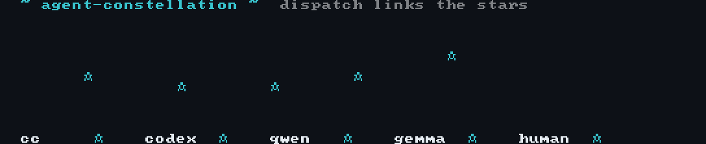
agent-constellation
dispatch は星座線に、collapse は赤い星に
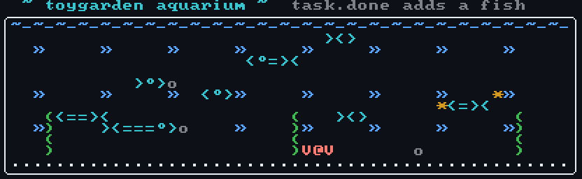
ascii-aquarium
ASCII 水槽。task.done イベントで魚が増える
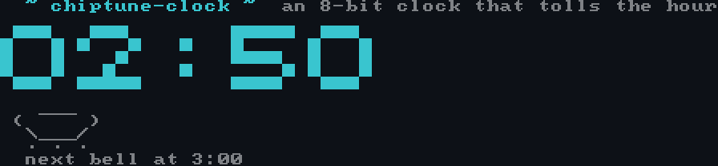
chiptune-clock
正時ごとに 8bit の鐘が鳴るターミナル置き時計
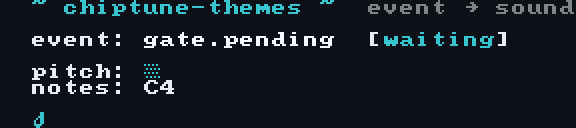
chiptune-themes
gate待ち/collapse/deploy成功をそれぞれの音テーマで知らせる
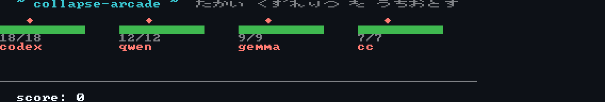
collapse-arcade
崩壊率の高いエージェントを撃墜するシューティング。撃つ＝レビュー
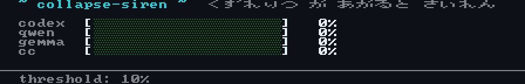
collapse-siren
崩壊率が閾値を超えたエージェントに不協和音のサイレンを鳴らす監視アラーム
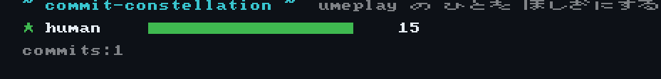
commit-constellation
コントリビューターの重みを星の大きさで見せる
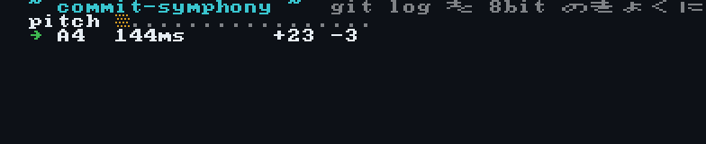
commit-symphony
git log を聴く。追加行数=音の高さ、AI共著=1オクターブ上
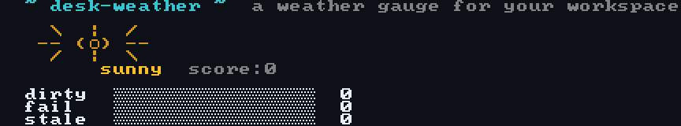
desk-weather
dirty/fail/stale の量を天気で見る作業環境ゲージ
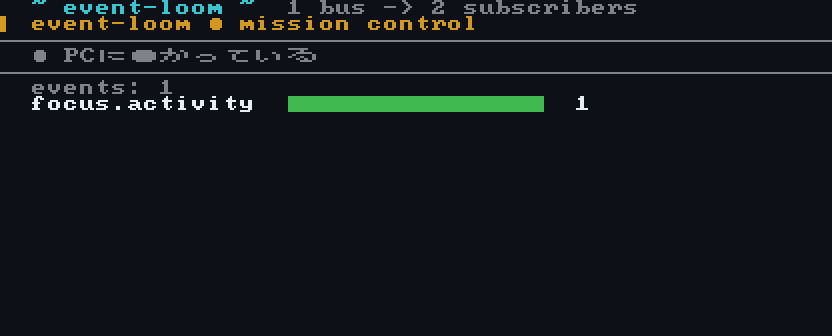
event-loom
1本のイベントバスに疎結合な複数の購読者がそのまま繋がる
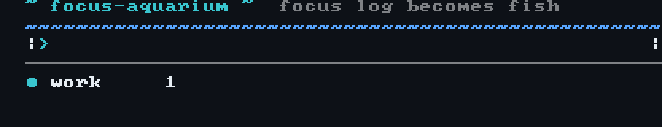
focus-aquarium
1日の focus ログをそのまま水槽にする
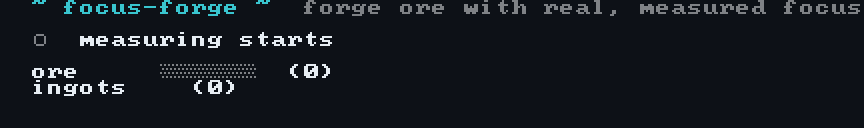
focus-forge
実測の集中ログ(focus-cam)で鉱石を鍛える。自己申告じゃない pomodoro
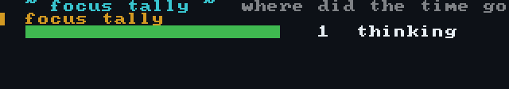
focus-tally
sqliteの活動ログをゼロ依存で端末チャート化する
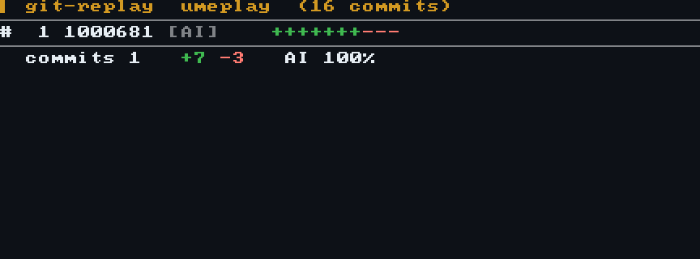
git-replay
git log を古い順のタイムラプスに。人間とAIの寄与を色分け
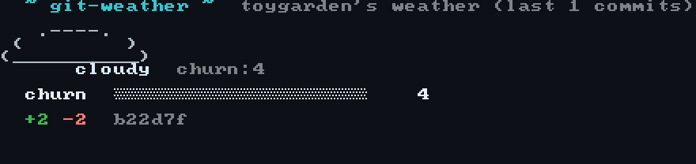
git-weather
直近コミットの churn をリポジトリの天気にする
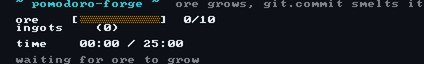
pomodoro-forge
25分の集中で鉱石が育ち、git.commit で精錬。完成でファンファーレ
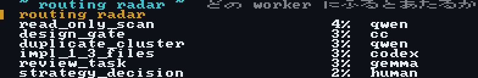
routing-radar
LLMルーティング実験を confidence バーで一覧
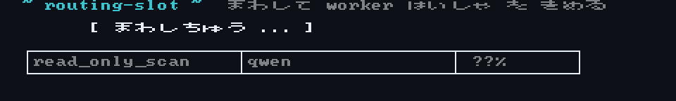
routing-slot
worker 配車をスロットで回す。routing_trial_ledger の予測を娯楽化
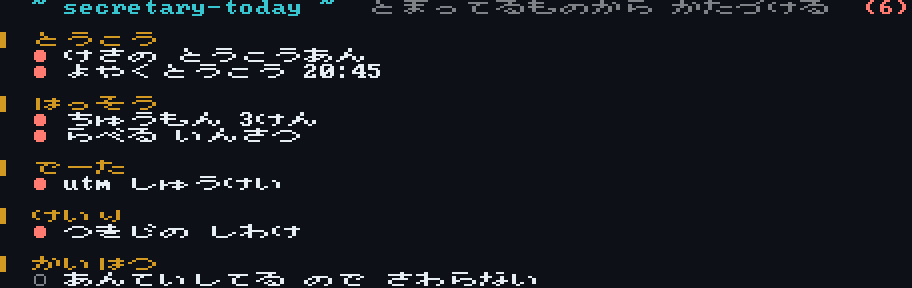
secretary-today
今日の優先順位をレーンで表示。blocked は赤く沈む
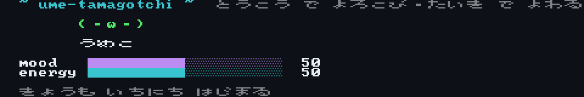
ume-tamagotchi
うめこ育成。投稿で喜び、承認待ちが積もると弱る売上導線の体感版